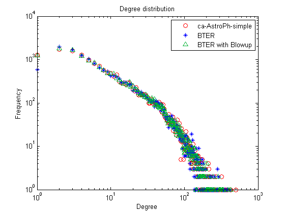

BTER Guide: How to create a BTER graph that matches an existing graph
By the BTER Team (Sandia National Laboratories, Livermore, CA):
- Tamara G. Kolda, tgkolda@sandia.gov
- Ali Pinar, apinar@sandia.gov
- Todd Plantenga, tplante@sandia.gov
- C. Seshadhri, scomand@sandia.gov
April 2013
Distributed with FEASTPACK.
Sandia National Laboratories is a multi-program laboratory managed and operated by Sandia Corporation, a wholly owned subsidiary of Lockheed Martin Corporation, for the U.S. Department of Energy's National Nuclear Security Administration under contract DE-AC04-94AL85000.
Contents
- Step 1: Load a graph
- Step 2: Compute the degree distribution
- Step 3: Calculate the clustering coefficient per degree
- Step 4: Generate BTER model
- Step 5: Create sparse matrix representation of BTER graph
- Step 6: Calculate metrics on BTER graph and compare to original
- Step 7: Visualize the data
- Step 7 (alternate): Visualize the results with binning
- "Blowup" option in BTER for better match to degree-1 vertices
- Larger graphs: Deduplicating the edge list
- Larger graphs: Calculating the clustering coefficients
- References
Step 1: Load a graph
Some preprocessing may be needed to make the graph simple.
G = G + G'; %<- Make the graph undirected G = spones(G); %<- Make the graph unweighted G = spdiags(zeros(size(G,1),1),0,G); %<- Remove self-loops
We use an example graph from the SNAP collection which has already been preprocessed and is included in the distribution.
load('data/ca-AstroPh-simple'); nnodes = size(G,1); nedges = nnz(G)/2; fprintf('Graph name: %s\n', graphname); fprintf('Number of nodes: %d\n', nnodes); fprintf('Number of edges: %d\n', nedges);
Graph name: ca-AstroPh-simple Number of nodes: 18772 Number of edges: 198050
Step 2: Compute the degree distribution
Calculate the number of nodes per degree.
nd = accumarray(nonzeros(sum(G,2)),1); maxdegree = find(nd>0,1,'last'); fprintf('Maximum degree: %d\n', maxdegree);
Maximum degree: 504
Step 3: Calculate the clustering coefficient per degree
This can be extremely expensive, especially for large graphs. We provide C code and accompanying mex interfaces to do both exact and estimated calculations. The matlab function ccperdeg is an interface to both; see below for details. The ccperdeg function returns the clustering coefficient per degree (ccd) and the global clustering coefficient (gcc). In the second case, the value of 'nsamples' is the number of sample wedges per bin.
[ccd,gcc] = ccperdeg(G);
fprintf('Global clustering coefficient: %.2f\n', gcc);
Global clustering coefficient: 0.32
Step 4: Generate BTER model
BTER creates two edges lists, corresponding to Phase 1 and Phase 2 edges, respectively.
fprintf('Running BTER...\n'); t1=tic; [E1,E2] = bter(nd,ccd); toc(t1) fprintf('Number of edges created by BTER: %d\n', size(E1,1) + size(E2,1));
Running BTER... --- BTER HPC Set-up --- Desired number of nodes: 18771 Desired number of edges: 198050 Multiplier to degree-1 nodes: 1 Maximum degree: 504 Number of groups: 76 Number of blocks: 2095 Phase 1 total weight: 303303 Phase 2 total weight: 52313 Time for setup (sec): 0.02 Determined phase for 355616 edges in 0.018912 seconds Sampled 303534 edges for phase 1 in 0.185769 seconds Sampled 52082 edges for phase 2 in 0.058720 seconds Removed 35 loops in 0.001642 seconds --- BTER HPC Complete --- Elapsed time is 0.319444 seconds. Number of edges created by BTER: 355581
Step 5: Create sparse matrix representation of BTER graph
Converting the edge list to an adjacency matrix is often the most expensive part in MATLAB. We separate this step because the edge list may be sufficient for many applications.
fprintf('Turning edge list into adjacency matrix (including dedup)...\n'); t2=tic; G_bter = bter_edges2graph(E1,E2); toc(t2); fprintf('Number of edges in dedup''d graph: %d\n', nnz(G)/2);
Turning edge list into adjacency matrix (including dedup)... Elapsed time is 0.770594 seconds. Number of edges in dedup'd graph: 198050
Step 6: Calculate metrics on BTER graph and compare to original
% Number of nodes and edges nnodes_bter = size(G_bter,1); nedges_bter = nnz(G_bter)/2; fprintf('Comparative Results: %s versus BTER\n', graphname); fprintf('Number of nodes: %d versus %d\n', nnodes, nnodes_bter); fprintf('Number of edges: %d versus %d\n', nedges, nedges_bter); % Degree disttribution nd_bter = accumarray(nonzeros(sum(G_bter,2)),1); maxdegree_bter = find(nd_bter>0,1,'last'); fprintf('Maximum degree: %d versus %d\n', maxdegree, maxdegree_bter); % Clustering coefficients [ccd_bter,gcc_bter] = ccperdeg(G_bter); fprintf('Global clustering coefficient: %.2f versus %.2f\n', gcc, gcc_bter);
Comparative Results: ca-AstroPh-simple versus BTER Number of nodes: 18772 versus 18771 Number of edges: 198050 versus 195795 Maximum degree: 504 versus 423 Global clustering coefficient: 0.32 versus 0.33
Step 7: Visualize the data
% Degree distribution figure; loglog(1:length(nd),nd,'ro',1:length(nd_bter),nd_bter,'b*'); title('Degree distribution'); xlabel('Degree'); ylabel('Frequency'); legend(graphname, 'BTER');

% Clustering coefficients figure; semilogx(1:length(ccd),ccd,'ro',1:length(ccd_bter),ccd_bter,'b*'); title('Clutering Coefficients'); xlabel('Degree'); ylabel('Mean CC'); legend(graphname, 'BTER');

Step 7 (alternate): Visualize the results with binning
The data can be extremely crowded, especially for the higher degrees. We also include the bindata function that can be used to logrithmically bin the data. Type 'help bindata' for full instructions. We make the following parameter choices here:
- tau = 10 : The first 10 bins are singleton bins.
- omega = 1.5 : Subsequent bins grow in size by a factor of 1.5.
- ybinfun = @mean : Take the average of all entries in the bin.
- prebin = true : Ensures every entry in the bin has an assigned value, even if its zero. Especially significant for last bin which may not be completely specified by the inputs.
binparams = {'tau', 10,'omega', 1.5, 'ybinfun', @mean, 'prebin', false};
In the binned version, the degree distibution can be non-integer and less than one because its the average value for the bin.
% Degree distribution figure; [xx1,yy1] = bindata([], nd, binparams{:}); [xx2,yy2] = bindata([], nd_bter, binparams{:}); loglog(xx1,yy1,'ro',xx2,yy2,'b*'); title('Degree distribution (logrithmically binned with means)'); xlabel('Degree'); ylabel('Frequency'); legend(graphname, 'BTER');

Clustering coefficients
figure;
[xx1,yy1] = bindata([], ccd, binparams{:});
[xx2,yy2] = bindata([], ccd_bter, binparams{:});
semilogx(xx1,yy1,'ro',xx2,yy2,'b*');
title('Clutering Coefficients (logrithmically binned with means)');
xlabel('Degree');
ylabel('Mean CC');
legend(graphname, 'BTER');

"Blowup" option in BTER for better match to degree-1 vertices
In many cases, BTER underestimates the number of degree-1 nodes. This is a well-understood problem, and we use the correction prescribed by Durak et al. (arXiv:1210.5288, 2012). We can see that now the number of degree-1 vertices is much more accurate.
[E1_alt,E2_alt] = bter(nd,ccd,'verbose',false,'blowup',10); G_alt = bter_edges2graph(E1_alt, E2_alt); nd_alt = accumarray(nonzeros(sum(G_alt,2)),1); figure; loglog(1:length(nd),nd,'ro',1:length(nd_bter),nd_bter,'b*'); hold on; loglog(1:length(nd_alt),nd_alt,'g^','Color', [0 .7 .2]); title('Degree distribution'); xlabel('Degree'); ylabel('Frequency'); legend(graphname, 'BTER', 'BTER with Blowup');
Larger graphs: Deduplicating the edge list
It's expensive to form a sparse adjancey matrix for very large graphs. If you want to remove duplicate edges in the edge list, we suggest the following procedure.
% Before we begin, we have to do some preprocessing to remove any loops % from Phase 2 (cannot occur in Phase 1), and order the vertices defining % the edges so that the least index is always first. Note that this step % can be skipped if 'swap' and 'rmloops' options area set to true when % running BTER. % --- Preprocessing for Deduplication --- % Remove loops in Phase 2 tf = (E2(:,1) == E2(:,2)); E2 = E2(~tf,:); % Consistently order Phase 1 tf = E1(:,1) > E1(:,2); tmp = E1(tf,2); E1(tf,2) = E1(tf,1); E1(tf,1) = tmp; % Consistently order Phase 2 tf = E2(:,1) > E2(:,2); tmp = E2(tf,2); E2(tf,2) = E2(tf,1); E2(tf,1) = tmp; % --- Preprocessing Complete --- % First, deduplicate Phase 1, which has most of the duplication E1_dedup = unique(E1,'rows'); fprintf('Number of duplicates in Phase 1: %d\n', size(E1,1) - size(E1_dedup,1)); % Next, deduplicate Phase 2, which does not have much duplication E2_dedup = unique(E2,'rows'); fprintf('Number of duplicates in Phase 2: %d\n', size(E2,1) - size(E2_dedup,1)); % Finally, remove any duplicates between the 2 phases. E_dedup = unique([E1_dedup; E2_dedup], 'rows'); fprintf('Number of duplicates across Phasees: %d\n', ... size(E1_dedup,1) + size(E2_dedup,1) - size(E_dedup,1)); fprintf('Final number of edges: %d\n', size(E_dedup,1));
Number of duplicates in Phase 1: 157937 Number of duplicates in Phase 2: 776 Number of duplicates across Phasees: 1073 Final number of edges: 195795
Larger graphs: Calculating the clustering coefficients
For larger graphs, calculating the clustering coefficient exactly can be extremely expensive. Here we compare the exact and estimated clustering coefficients using the two different methods.
% Load a bigger graph load('data/web-NotreDame-simple'); nnodes = size(G,1); nedges = nnz(G)/2; fprintf('Graph name: %s\n', graphname); fprintf('Number of nodes: %d\n', nnodes); fprintf('Number of edges: %d\n', nedges); % Calculate the clustering coefficients _exactly_. tic; [ccd0,gcc0] = ccperdeg(G,'nsamples',0); t = toc; fprintf(' Exact GCC: %e (%f seconds to compute) \n', gcc0, t); % Calculate the clustering coefficients using wedge sampling. nsamples = 2000; tic; [ccd,gcc] = ccperdeg(G,'nsamples',nsamples); t = toc; fprintf(' Estimated GCC: %e (%f seconds to compute) \n', gcc, t); % Compute the bound on the error and check results. delta = 0.001; %<-Corresponding to 99.9% confidence. errorbound = sqrt(log(2/delta)/(2*nsamples)); fprintf(' Expected error: %e (with 99.9%% confidence)\n', errorbound); fprintf(' Max CCD error: %e\n', max(abs(ccd-ccd0))); fprintf(' GCC error: %e\n', abs(gcc-gcc0)); % Visualize the differences figure; e = ones(size(ccd0)); errorbar(1:length(ccd0),ccd0,errorbound*e,errorbound*e,'b.'); set(gca,'XScale','log') hold on; plot(1:length(ccd),ccd,'r*'); xl = xlim; xlim([1 xl(2)]); ylim([-errorbound 1+errorbound]); title('Clutering Coefficients Calculation Comparison'); xlabel('Degree'); ylabel('Mean CC'); legend('Exact', 'Wedge Sampling');
Graph name: web-NotreDame-simple
Number of nodes: 325729
Number of edges: 1090108
Exact GCC: 8.767355e-02 (2.091621 seconds to compute)
Estimated GCC: 8.747799e-02 (0.535013 seconds to compute)
Expected error: 4.359158e-02 (with 99.9% confidence)
Max CCD error: 2.666742e-02
GCC error: 1.955560e-04

References
- SNAP: Stanford Network Analysis Project, http://snap.stanford.edu/
- ca-AstroPh: Astro Physics collaboration network, SNAP, http://snap.stanford.edu/data/ca-AstroPh.html
- web-NotreDame: Notre Dame web graph, SNAP, http://snap.stanford.edu/data/web-NotreDame.html
- BTER Model: C. Seshadhri, T. G. Kolda and A. Pinar. Community structure and scale-free collections of Erdös-Rényi graphs, Physical Review E 85(5):056109, May 2012, doi:10.1103/PhysRevE.85.056109
- BTER Implementation: T. G. Kolda, A. Pinar, T. Plantenga and C. Seshadhri. A Scalable Generative Graph Model with Community Structure, arXiv:1302.6636, March 2013, http://arxiv.org/abs/1302.6636
- Clustering Coefficient (ccperdeg.m and related MEX files): C. Seshadhri, A. Pinar and T. G. Kolda. Triadic Measures on Graphs: The Power of Wedge Sampling in Proc. 2013 SIAM International Conference on Data Mining (SDM), May 2013, preprint: http://arxiv.org/abs/1202.5230